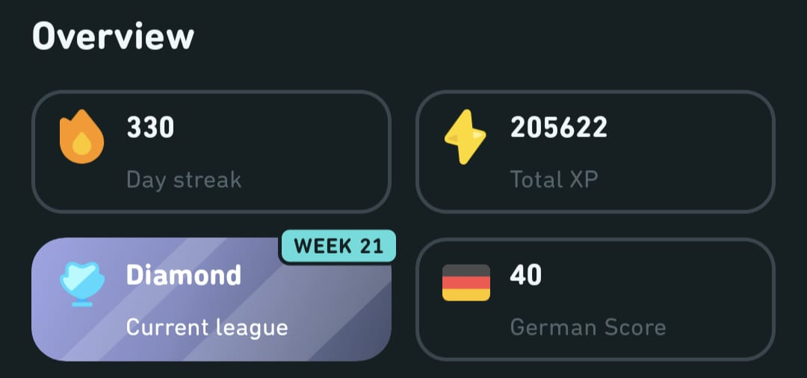
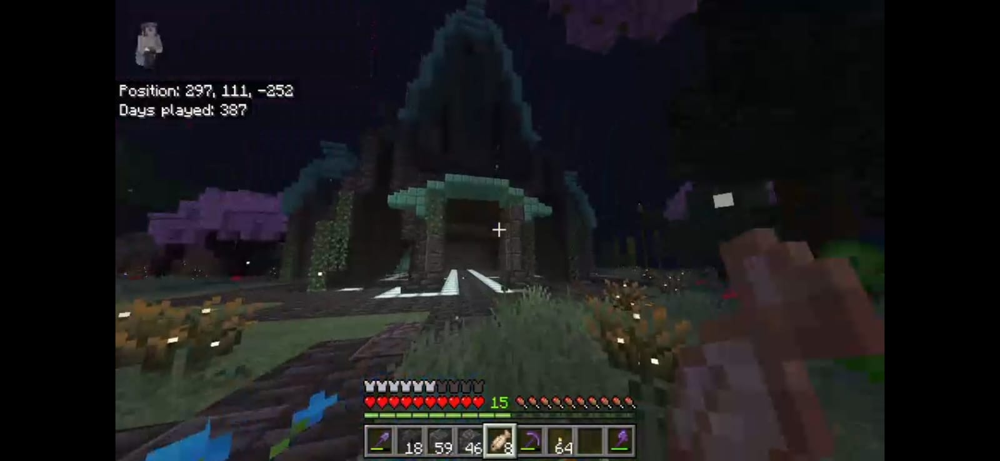
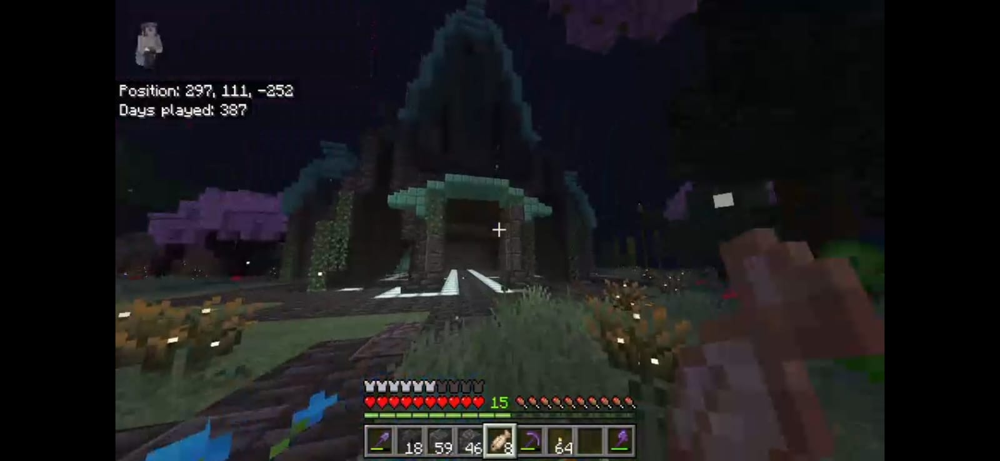

About me
My name is Renato Granemann de Souza. I have a many hobbies and study a lot (if you consider that studying is not a hobby, then I might not have that many hobbies at all).
Here goes a list of my interests:
- Theoretical knowledge
- Mathematics
- Physics
- Chemistry
- Programming
- Python
- HTML, CSS --- (I know they theoretically are not programming languages)
- JavaScript
- Languages
- German
- English
- Portuguese? - (my main language)
- Videogames
- Clash of Clans
- Minecraft
- Sports
- Gym
- Running
- Cycling
Olympiads
I also like to participate on scientific olympiads. I have a few medals that will be listed here, in order of the I most like.
- OBMEP
- 2022 - Silver
- 2023 - Gold
- 2024 - Bronze
- OBA
- 2023 - Gold
- 2024 - Gold
- 2025 - Gold
- Canguru de matemática
- 2023 - Participation
- 2024 - Gold
- 2025 - Gold
- ONC
- 2023 - Bronze
- Jacob Palis Jr (OBM)
- 2024 - Silver
- OPRM
- 2023 - Silver
Below is a photo of my Duolingo profile (and its impressive 331 days streak and 205622 XP in German), the most beautiful Clash of Clans base, as well as a video of the biggest and most meticulously Minecraft house ever built.
Click on the images to open my profile of the respective platform.

 
